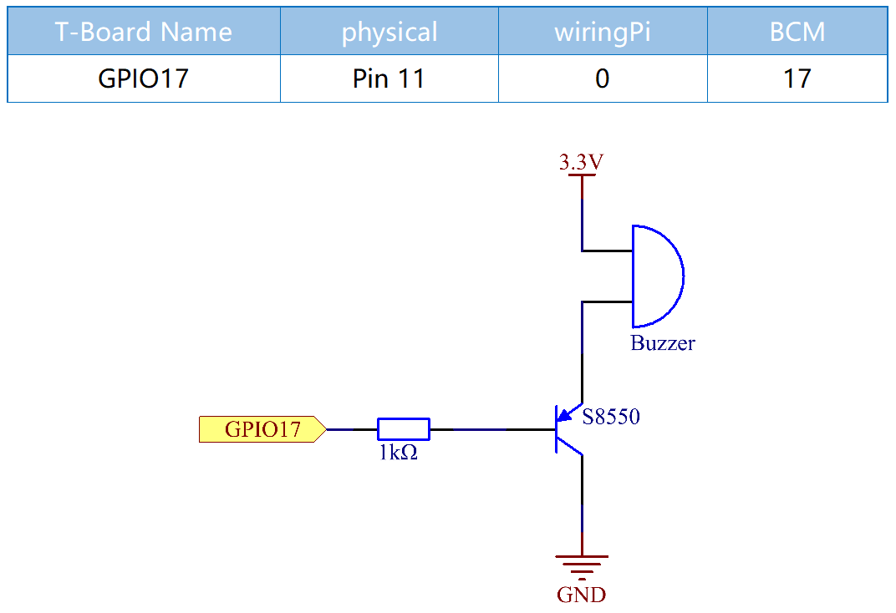
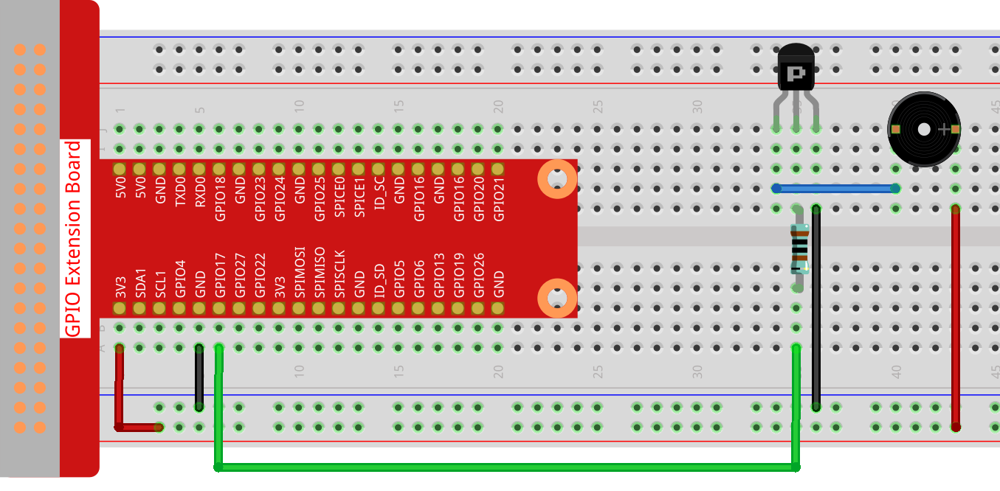

Note
Bonjour, bienvenue dans la communauté SunFounder Raspberry Pi & Arduino & ESP32 Enthusiasts sur Facebook ! Plongez dans l’univers du Raspberry Pi, Arduino et ESP32 avec d’autres passionnés.
Pourquoi nous rejoindre ?
Support d’experts : Résolvez les problèmes après-vente et relevez des défis techniques grâce à l’aide de notre communauté et de notre équipe.
Apprenez et partagez : Échangez des astuces et des tutoriels pour perfectionner vos compétences.
Aperçus exclusifs : Accédez en avant-première aux annonces de nouveaux produits et aux avant-goûts.
Remises spéciales : Profitez de réductions exclusives sur nos nouveaux produits.
Promotions festives et tirages au sort : Participez à des concours et des promotions de saison.
üëâ Pr√™t √† explorer et cr√©er avec nous ? Cliquez sur [Ici] et rejoignez-nous d√®s aujourd‚Äôhui !
1.2.1 Buzzer Actif
Introduction
Dans cette leçon, nous allons apprendre à faire bipper un buzzer actif en utilisant un transistor PNP.
Composants

Principe
Buzzer
Le buzzer est un dispositif électronique avec une structure intégrée, alimenté par courant continu (DC), largement utilisé dans les ordinateurs, imprimantes, photocopieuses, alarmes, jouets électroniques, dispositifs électroniques automobiles, téléphones, minuteurs et autres appareils électroniques ou de signal sonore. Il existe deux types de buzzers : actifs et passifs (voir l’image ci-dessous). Si vous retournez le buzzer, celui avec une carte verte est un buzzer passif, tandis que celui recouvert d’un ruban noir est un buzzer actif.
La différence entre un buzzer actif et un buzzer passif :

La différence principale est qu’un buzzer actif possède une source d’oscillation intégrée, ce qui lui permet d’émettre des sons dès qu’il est alimenté. En revanche, un buzzer passif n’a pas de source intégrée et nécessite des signaux carrés dont la fréquence est comprise entre 2K et 5K pour fonctionner. Le buzzer actif est généralement plus coûteux en raison de ses circuits d’oscillation internes.
Voici le symbole électrique d’un buzzer. Il possède deux broches avec des pôles positif et négatif. Le signe « + » sur la surface représente l’anode, tandis que l’autre broche est la cathode.

Vous pouvez vérifier les broches du buzzer : la plus longue est l’anode et la plus courte est la cathode. Assurez-vous de ne pas les inverser lors du branchement, sinon le buzzer ne produira pas de son.
Schéma
Dans cette expérience, un buzzer actif, un transistor PNP et une résistance de 1k ohm sont utilisés entre la base du transistor et le GPIO pour protéger ce dernier. Lorsque la sortie GPIO17 du Raspberry Pi est alimentée en niveau bas (0V) via un programme, le transistor conduira en raison de la saturation du courant, et le buzzer émettra un son. Lorsque la sortie GPIO du Raspberry Pi est en niveau haut, le transistor sera bloqué et le buzzer ne sonnera pas.
Procédure Expérimentale
Étape 1 : Montez le circuit (Attention aux pôles du buzzer : celui marqué d’un « + » est le pôle positif et l’autre est le pôle négatif).
{kind=link}
Pour les utilisateurs du langage C
Étape 2 : Ouvrez le fichier de code.
cd ~/davinci-kit-for-raspberry-pi/c/1.2.1/
Étape 3 : Compilez le code.
gcc 1.2.1_ActiveBuzzer.c -lwiringPi
Étape 4 : Exécutez le fichier exécutable.
sudo ./a.out
Après l’exécution du code, le buzzer émettra un bip.
Note
Si cela ne fonctionne pas après l’exécution ou si une erreur apparaît, comme : « wiringPi.h : Aucun fichier ou répertoire de ce type », veuillez vous référer à C code is not working?.
Code
#include <wiringPi.h>
#include <stdio.h>
#define BeepPin 0
int main(void){
if(wiringPiSetup() == -1){ //when initialize wiring failed, print messageto screen
printf("setup wiringPi failed !");
return 1;
}
pinMode(BeepPin, OUTPUT); // Définir GPIO0 en sortie
while(1){
//beep on
printf("Buzzer on\n");
digitalWrite(BeepPin, LOW);
delay(100);
printf("Buzzer off\n");
//beep off
digitalWrite(BeepPin, HIGH);
delay(100);
}
return 0;
}
Explication du code
digitalWrite(BeepPin, LOW);
Nous utilisons un buzzer actif dans cette expérience, il émet donc un son automatiquement lorsqu’il est alimenté en courant continu. Ce programme configure le port I/O à un niveau bas (0V) pour activer le transistor et faire sonner le buzzer.
digitalWrite(BeepPin, HIGH);
Ici, le port I/O est configuré à un niveau haut (3.3V), empêchant le transistor d’être alimenté, ce qui empêche le buzzer de sonner.
Pour les utilisateurs Python
Étape 2 : Ouvrez le fichier de code.
cd ~/davinci-kit-for-raspberry-pi/python
Étape 3 : Exécutez le fichier.
sudo python3 1.2.1_ActiveBuzzer.py
Le code s’exécute et le buzzer émet un bip.
Code
Note
Vous pouvez Modifier/Réinitialiser/Copier/Exécuter/Arrêter le code ci-dessous. Mais avant cela, vous devez accéder au chemin du code source comme davinci-kit-for-raspberry-pi/python.
import RPi.GPIO as GPIO
import time
# Définir la broche #17 pour le buzzer
BeepPin = 17
def setup():
# Configurer les GPIO en numérotation BCM
GPIO.setmode(GPIO.BCM)
# Configurer le mode de LedPin en sortie,
# et le niveau initial à High (3.3v)
GPIO.setup(BeepPin, GPIO.OUT, initial=GPIO.HIGH)
def main():
while True:
# Buzzer on (Beep)
print ('Buzzer On')
GPIO.output(BeepPin, GPIO.LOW)
time.sleep(0.1)
# Buzzer off
print ('Buzzer Off')
GPIO.output(BeepPin, GPIO.HIGH)
time.sleep(0.1)
def destroy():
# Désactiver le buzzer
GPIO.output(BeepPin, GPIO.HIGH)
# Libérer les ressources
GPIO.cleanup()
# Si ce script est exécuté directement :
if __name__ == '__main__':
setup()
try:
main()
# Lorsque 'Ctrl+C' est pressé, la fonction destroy() est exécutée.
except KeyboardInterrupt:
destroy()
Explication du code
GPIO.output(BeepPin, GPIO.LOW)
Configurer la broche du buzzer à un niveau bas pour faire sonner le buzzer.
time.sleep(0.1)
Attendre 0,1 seconde. Modifiez la fréquence de commutation en ajustant ce paramètre.
Note
Il ne s’agit pas de la fréquence sonore. Le buzzer actif ne peut pas modifier la fréquence sonore.
GPIO.output(BeepPin, GPIO.HIGH)
Désactiver le buzzer.